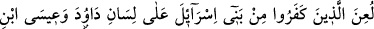
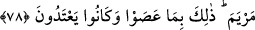

değil de kendisiyle meşgul olur. Ancak o vuslata ermek için bâtınını tasfiye ile
meşgûldür. Vuslat ise, Hakk’ın kula açıkça keşfolunması ve kulun O’nunla istiğrak
hâline gelmesidir. İnsan o hâle gelir ki Allah’tan başka bilgisi, O’ndan başka arzusu
kalmaz. Müşâhede ve arzu bakımından tüm varlığı Hak ile meşguldür. Bu halde sâlik
artık, zâhirini ibadetle, bâtınını da güzel ahlâkla îmar etmek için kendisiyle ilgilenmez.
Çünkü bütün bunlar vuslat için bir temizliktir ve işin başlangıcıdır. İşin nihâyeti ise
sâlikin nefsinden tamâmen sıyrılıp “sanki O’nun gibi” oluncaya kadar Hak ile meşgûl
olmaktır. İşte vuslat budur.
Mesnevî’de şöyle geçer:
Allah’ın sanat yurdu da yokluktandır, hazinesi de
Sen varlığa aldanmış kalmışsın, yokluk nedir ne bileceksin?
Testideki su ırmağa döküldü mü
Irmakta yok olur, ırmak kesilir
78. İsrâiloğulları’ndan kâfir olanlar Dâvud ve Meryem oğlu Îsâ diliyle
lânetlenmişlerdir. Bunun sebebi, isyan etmeleri ve sınırı aşmalarıdır.
“İsrâiloğulları’nın kâfir olanlarına Dâvud ve Meryem oğlu Îsâ diliyle lânet
edilmiştir.” Yani Allah’ın rahmetinden tardedilmiş ve uzaklaştırılmışlardır.
Dâvud (a.s.)’ın diliyle lânetlenenler cumartesi yasağına riâyet etmeyen Eyle
ahâlîsidir. Dâvud (a.s.) onlar hakkında “Allahım onlara lânet et, onları sonradan
geleceklere âyet ve ibret yap!” diye bedduâ etti. Bunun üzerine maymuna çevrildiler.
Meryem oğlu Îsâ’nın diliyle lânetlenenler ise, ondan gökten bir sofra indirilmesini
talep eden, istekleri yerine getirildikten sonra yine îman etmeyenlerdir. Îsâ (a.s.) onlar
için: “Allahım cumartesi gününün hürmetine riâyet etmeyenlere lânet ettiğin gibi bunlara
da lânet et! Onları kıyâmete kadar anılacak bir ibret yap!” diye bedduâ etti. Bunun
üzerine domuza çevrildiler. Bu şekilde meshe uğrayanlar beş bin erkek olup, içlerinde
kadın ve çocuk yoktu.
Sanki “Ne sebeple bu meydana geldi?” diye sorulmuş, cevap olarak da şöyle
buyurulmuştur: “Bunun sebebi, isyan etmeleri ve sınırı aşmalarıdır.” Meshe
uğramalarını gerektirecek kadar feci bir lânete uğramalarının sebebi, isyanları ve
kendilerine haram kılınan şeyleri çiğnemeleridir.